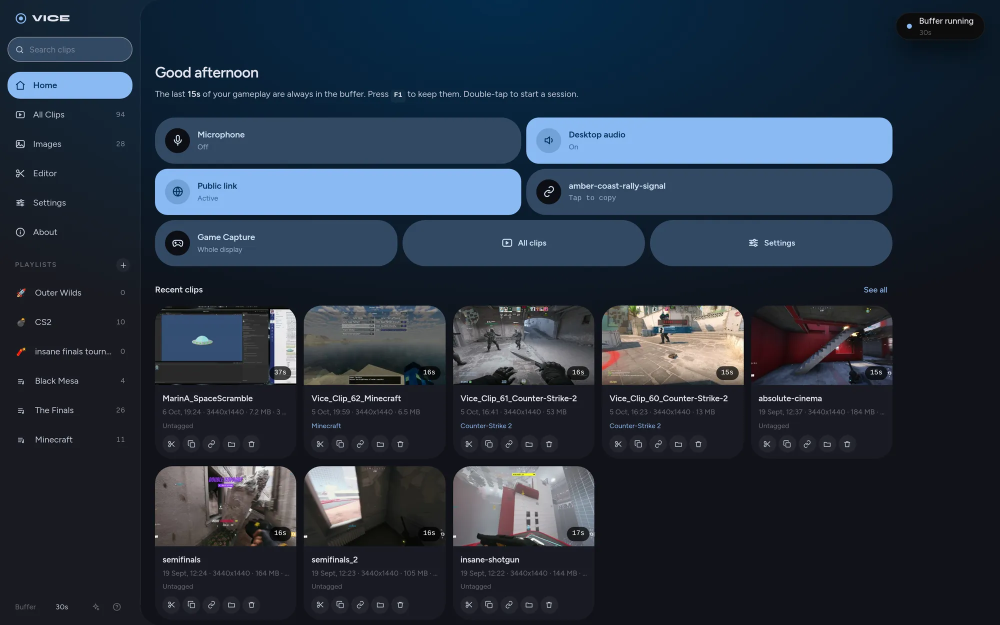
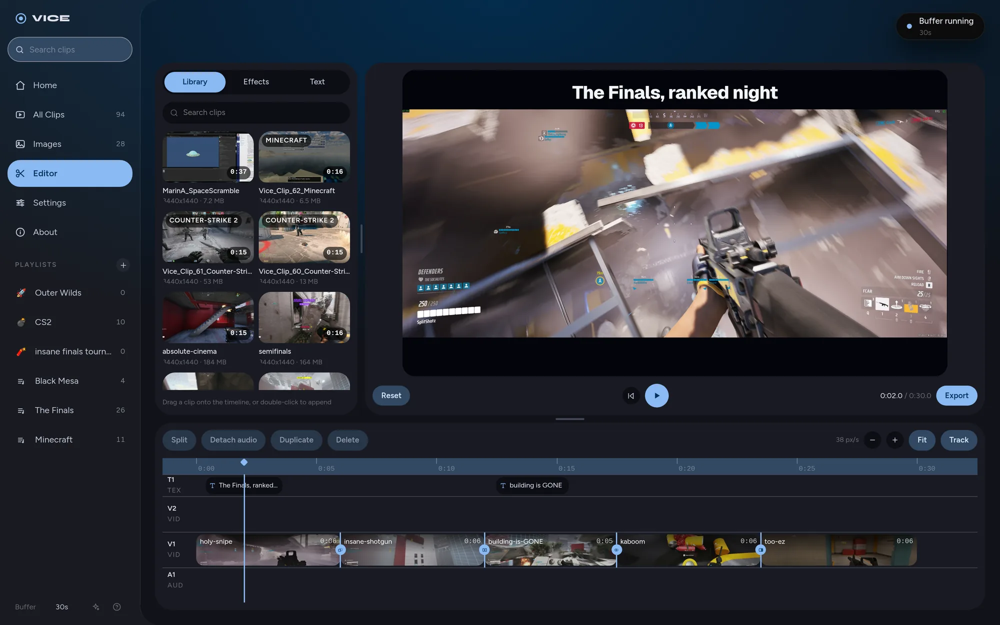
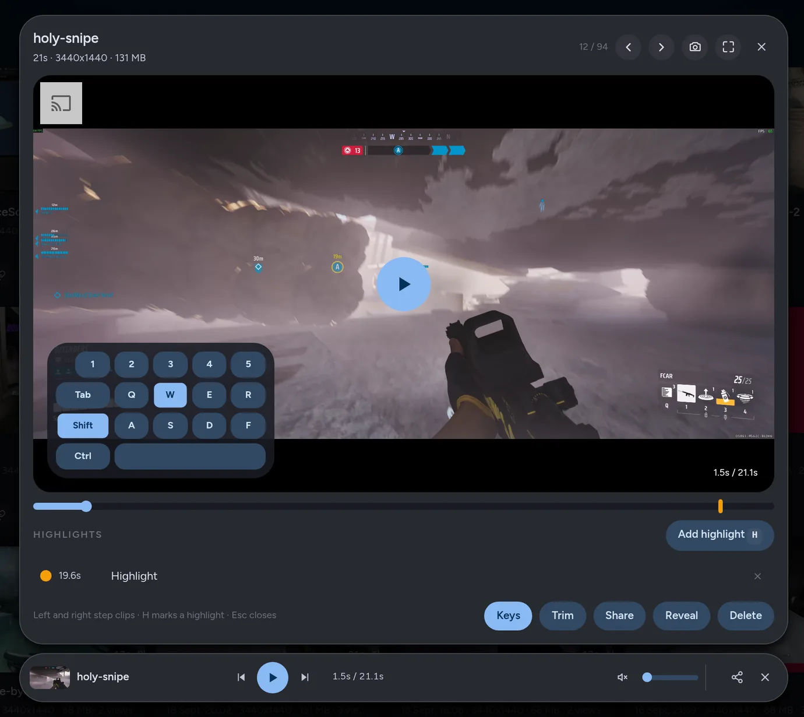
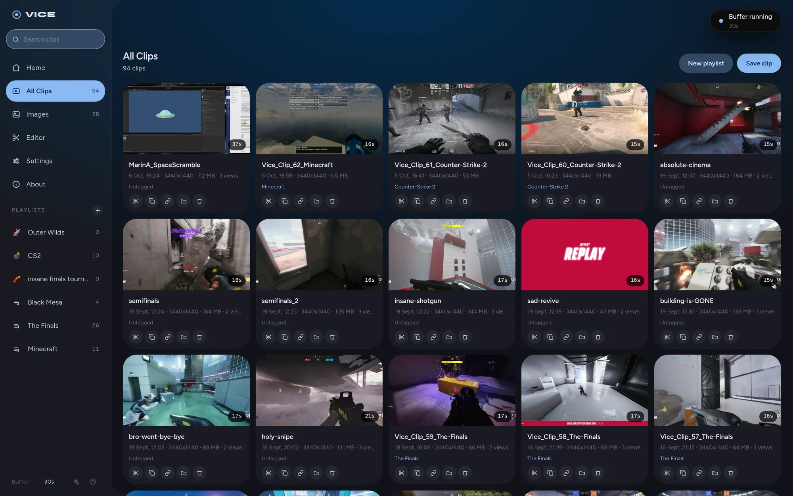
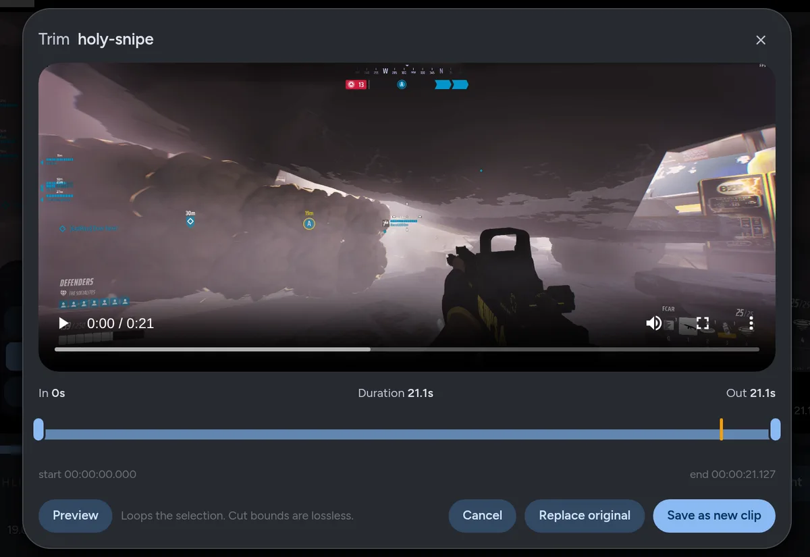

VICEInstant replay
for Linux.
The key overlay in this clip is illustrative. It was added for this page, not recorded with the clip.
Press a key and the last 20 seconds become a clip. Trim it, edit it, or send it as a link that plays in Discord.
yay -S vice-clipper
git clone https://github.com/splitshotz/Vice && cd Vice && ./install.sh
inputs.vice.url = "github:splitshotz/Vice";
- Free and open source, GPL-3.0
- X11 and Wayland, NVIDIA, AMD and Intel
- Version 2.15, what's new

Press the key after it happens.
Vice holds the last two minutes in memory, so you never have to remember to start recording before the good part. Press your clip key and the last 20 seconds become a clip. The key, the length and the buffer are all yours to set. Until you press it, nothing is written to disk.
- Play or work. Vice keeps the last two minutes in memory. Your frame rate drops by less than 1%.
- Press your key. F9 unless you pick another. The last 20 seconds save as a clip, and a double-tap records a whole match.
- Keep it or send it. Trim it, edit it, file it in a playlist, or copy its link.
Your game keeps its frame rate.
Recording runs on the part of your graphics card made for video, not on the cores your game needs, so leaving Vice on costs you less than 1% of your frame rate. NVIDIA, AMD and Intel all work.
Set it up your way
- Every sound on its own track. Game, voice chat and mic recorded separately, each with its own volume.
- The game window or the whole screen. One tile on Home switches between them, so Discord and notifications can stay out.
- Any key, any length. Your own combos, and extra keys that each save a different length.
- Quality where you want it. Frame rate, resolution, codec and 10-bit colour, or leave it on Auto.
Cut the montage without leaving Vice.
Drop clips on a timeline, trim and arrange them, add titles and transitions, then export an MP4. One switch makes it fit Discord's upload limit.
- Crossfade
- Fade to black
- Fade to white
- Dip to accent
- Blur dissolve
- Slide


Not only for games.
Vice records whatever is on your screen. Double-tap your clip key to record until you press it again, for a tutorial, a bug report or a call you need to keep, and mark the moments that matter as you go.
Streaming
Run Vice beside OBS. The overlay puts your keys on stream, Game Capture keeps Discord off it, and one key catches the moment you want to post later.
Everything else
Whole-screen sessions in one file, a screenshot key with a pen for marking things up, and Follow my mouse to record the monitor you are working on.
Every clip, filed under the game it came from.
Vice knows hundreds of games and files each clip into a playlist for the one you were playing. Make your own playlists too, rename anything, and find any clip from the sidebar.


- Trim keeps the original. Your selection saves as a new clip.
- Your own playlists, with an emoji and a colour. Drag clips onto them.
- Copy video puts the file itself on your clipboard, to paste anywhere.
- Rich Presence shows the game you are clipping on Discord, with its icon.
And the rest of it.
For tinkerers
- Hotkeys read from the keyboard itself, so they work in fullscreen games and on every Wayland desktop.
- Clip presets: extra keys that each save their own length.
- A blocklist for games that need the same keys.
- Your own recorder flags, and a
vicecommand for scripts.
For streamers
- Your keys on stream, in your colour, anywhere on screen.
- Only the game in the shot, with Discord and notifications left out.
- Mic, game and chat on separate tracks, each with its own volume.
- Sounds that tell you a clip saved or failed, without looking.
For everyone
- Five colour schemes, the ones from the top of this page.
- Four languages, translated by people who use Vice.
- Older NVIDIA cards still record without slowing the game.
- Nothing phones home. No account, no telemetry, and GPL-3.0 source.
Where it runs.
Recording works on NVIDIA, AMD and Intel graphics, on X11 and on Wayland. Game detection and the overlay depend on what your desktop lets Vice see.
| Desktop | Recording | Game detection | Keyboard overlay |
|---|---|---|---|
| Hyprland | Yes | Yes | Yes |
| KDE Plasma, Wayland | Yes | With kdotool | Yes |
| Sway | Yes | Yes | Yes |
| Niri | Yes | Yes | Yes |
| GNOME, Wayland | Yes | XWayland games | No |
| Any X11 desktop | Yes | Yes | Yes |
Install it.
Pick a key.
Arch and derivatives
From the AUR. Updates arrive with the rest of your system.
yay -S vice-clipperDebian, Ubuntu, Fedora, openSUSE
The installer sets up gpu-screen-recorder, Vice and its service, on derivatives too.
git clone https://github.com/splitshotz/Vice && cd Vice && ./install.sh
NixOS
Add the flake, add vice.nixosModules.default to your modules and set services.vice.enable = true.
inputs.vice.url = "github:splitshotz/Vice";Setup details, troubleshooting and the full feature list are on GitHub.
Made by Andrew Marin, with help.
These people sent patches, translations and games. Many more found the hard bugs by opening an issue with a log attached.